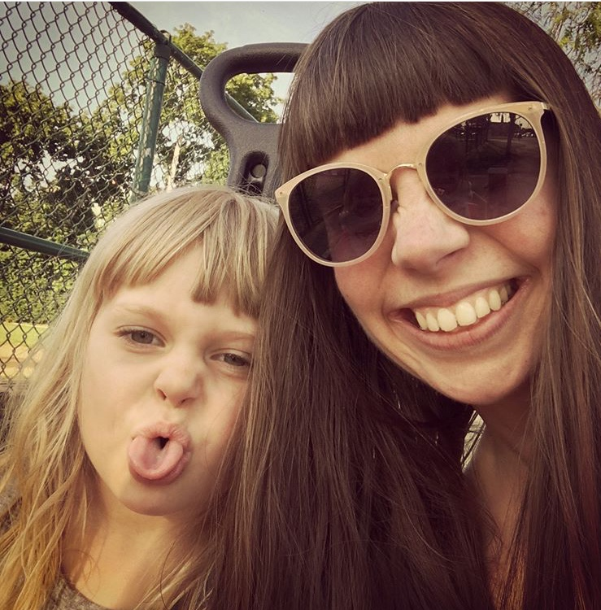

Hi, I'm Liz! I specialize in realism (and sometimes surrealism), and work mainly with acrylic paints and ebony and colored pencils. Portraits, animals and landscapes have been among my most recent topics. To view pieces currently for sale or to request a custom project, please visit the link above for my Patron Art profile. You can also send me an email.
I'm a Cleveland native and reside with my husband, two kids, three cats and a hedgehog. Creating has been an essential part of my life for as long as I can remember. Other projects and interests of mine include genealogy, medieval British literature, volunteering for the college radio station WCSB, and learning how to design and write code for websites (such as this one!)